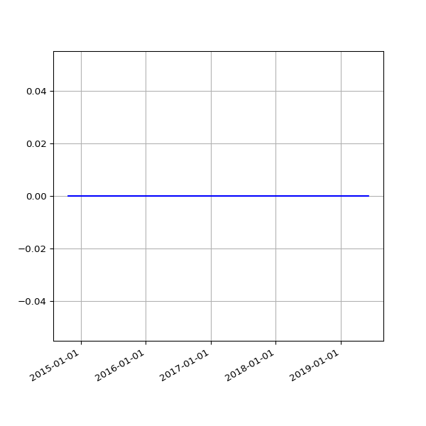

This section will be blank if no issues were found.
The below figures are calculated based on the data contained within the <budget> element for each reported activity. Original and revised elements are based on the value declared in the budget/@type attribute. Where budgets fall across two calendar years, the month of the <period-end> date is used to determine annual groupings, with budgets for periods ending January-June added to the previous calendar year.
| Year | Count (all) | Sum (all) | Count (Original) | Sum (Original) | Count (Revised) | Sum (Revised) |
|---|---|---|---|---|---|---|
| Total |
| Package | Activities (J) | Organisations (J) | File Size (J) | Version (J) |
|---|---|---|---|---|
| agriterra-1 | 159 | 0 | 1.1 MB | 1.04 |
| agriterra-2 | 66 | 0 | 454.3 kB | 1.04 |
| agriterra-3 | 152 | 0 | 1.1 MB | 1.04 |
| agriterra-4 | 157 | 0 | 1.2 MB | 1.04 |
| agriterra-5 | 151 | 0 | 1.1 MB | 1.04 |